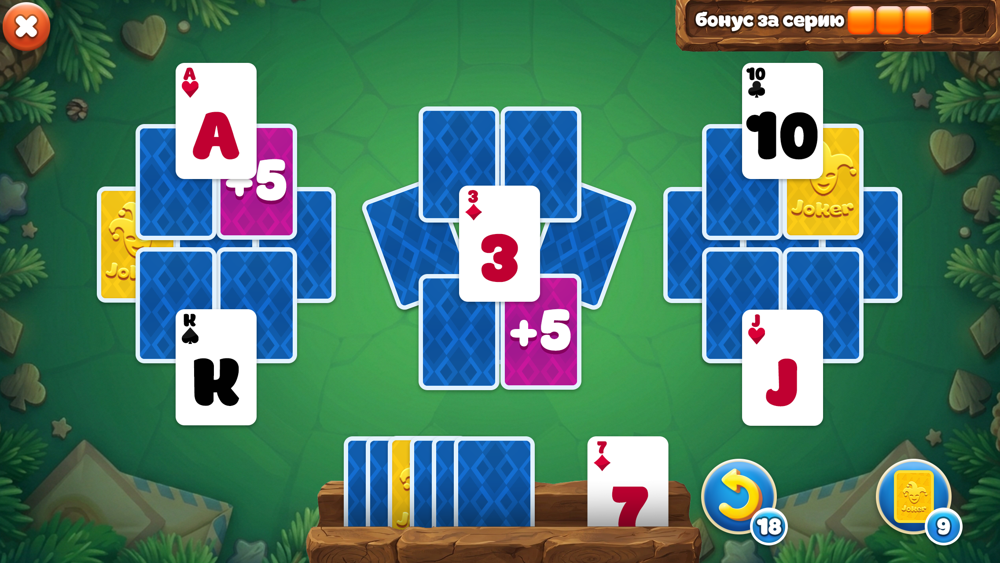
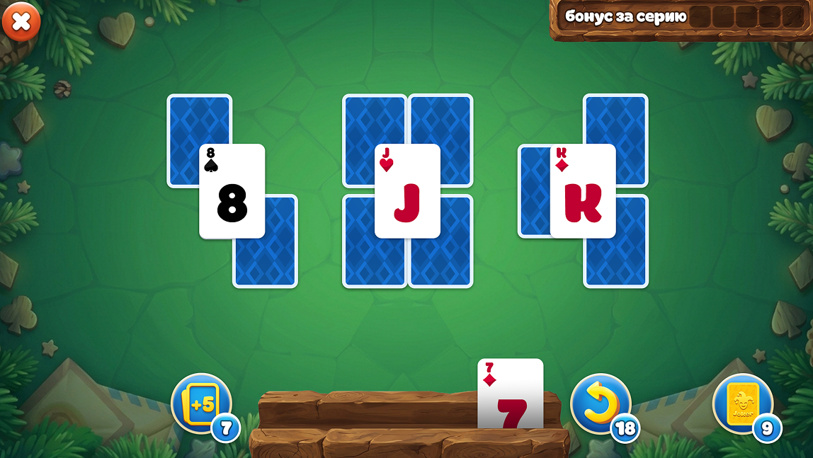

Солитер
Разработан полный визуальный концепт и графические ассеты для классической карточной игры, сочетающий цифровую точность и атмосферу натуральных материалов.


Разработан полный визуальный концепт и графические ассеты для классической карточной игры, сочетающий цифровую точность и атмосферу натуральных материалов.

